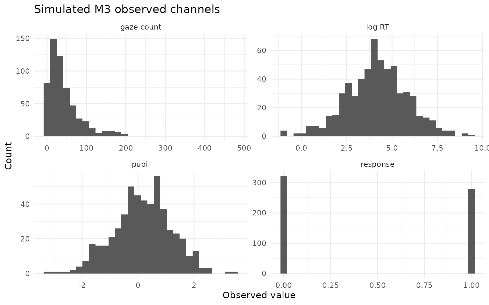
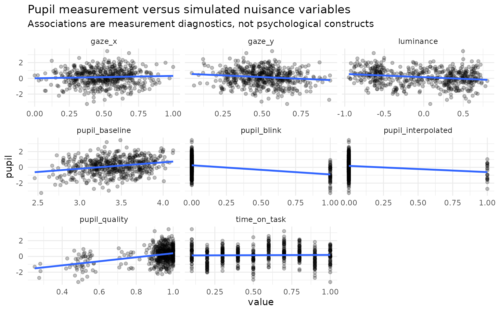

M3: Four-channel response, RT, gaze, and pupil measurement
Source:vignettes/m3-four-channel-reference-model-0-10.Rmd
m3-four-channel-reference-model-0-10.RmdPurpose
M3 extends the frozen M2 response + response-time + fixation-count reference model with a fourth pupil measurement channel. The extension is deliberately neutral: pupil responsivity is a model dimension, not an automatic proxy for cognitive load, effort, arousal, attention, or strategy. The purpose is to ask whether a pupil measurement contributes additional response-target information after the response, RT, and gaze channels have already been represented.
For person j and item i, M3 uses four
correlated person effects (ability, speed, gaze-process propensity,
pupil responsivity) and four correlated item location effects
(difficulty, time intensity, gaze intensity, pupil intensity). The
observation layer is Rasch response, lognormal RT, negative-binomial
fixation count, and Gaussian pupil summary. Pupil nuisance terms are
included explicitly for baseline, luminance, gaze X/Y, measurement
quality, blink status, interpolation status, and time-on-task when those
variables are available.
The correlation structures are fitted through Cholesky factors with LKJ priors. This is computational parameterization, not a claim that the four process dimensions are psychological constructs.
Simulate and audit before fitting
sim <- simulate_multimodal_m3(
n_person = 60,
n_item = 10,
seed = 20260815
)
audit <- audit_multimodal_m3_identifiability(sim)
print(audit)
#> <eye_multimodal_m3_identifiability>
#> persons: 60
#> items: 10
#> supported: TRUE
#> warning-free: TRUE
#> missing: response=0.000, rt=0.000, gaze=0.040, pupil=0.140
#> pupil blink/interpolation: 0.110 / 0.048
#> boundary: This is a conservative structural/data-support audit. Passing does not establish global identifiability, empirical construct validity, or robustness to informative pupil/gaze missingness, device artefacts, or unmeasured luminance.The audit checks channel presence, variation, bipartite design connectivity, pupil missingness, nuisance availability, blink/interpolation burden, and the explicit scale constraints used by the model. Passing is a prerequisite for fitting; it is not proof of global identifiability.
plot(sim, type = "channels")
plot(sim, type = "pupil_confounds")
#> `geom_smooth()` using formula = 'y ~ x'
Fit with CmdStanR
The reference estimator is gated because it requires a working CmdStanR/CmdStan toolchain and because scientific promotion requires recovery, PPC, missingness, negative-control, and empirical evidence beyond successful sampling.
fit <- fit_multimodal_m3(
sim,
chains = 4,
parallel_chains = 4,
iter_warmup = 1000,
iter_sampling = 1000,
adapt_delta = 0.95,
seed = 20260815,
init = 0
)
summary(fit)
validate_multimodal_m3(fit)
plot(fit, type = "person_correlations")
plot(fit, type = "pupil_nuisance")M3 does not silently substitute another backend. Missing observed
values are omitted under the current explicit ignorable
missingness likelihood; simulate_multimodal_m3() and
multimodal_m3_recovery() provide stress scenarios for
violations of that assumption.
Relationship to M0-M2
The M0-M3 sequence remains cumulative conceptually, but M3 analysis
is not restricted to a single nested path.
multimodal_m3_ablation() fits all eight response-anchored
combinations of RT, gaze and pupil, allowing pupil to be evaluated
alone, after RT, after gaze, and after both. This is necessary because
correlated channels can be redundant or conditionally complementary.
Evidence boundary
M3 is a measurement framework. A positive pupil coefficient, latent correlation, ELPD gain, or posterior-variance reduction is not by itself evidence for a cognitive mechanism. Conversely, a scientifically useful M3 result may be that pupil contributes no clear incremental response-target information after nuisance adjustment and the other process channels.